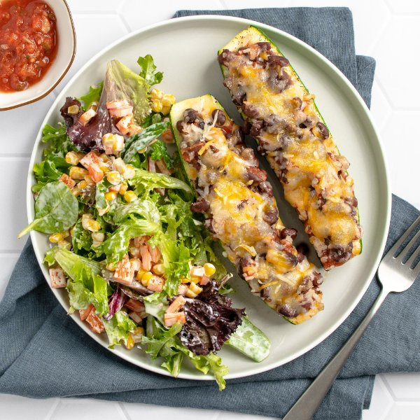

Cheesy Mexican Zucchini Boats with Black Beans, Salsa & Tossed Salad

Total Time
35 min
Nutrition (per serving)
572.6 kcalCalories
27.5 gProtein
68.9 gCarbs
24.3 gFat
Full nutrition table
| Calories | 572.6 kcal |
| Total fat | 24.3 g |
| Saturated fat | 8.4 g |
| Trans fat | 0 g |
| Cholesterol | 39.2 mg |
| Sodium | 2375.7 mg |
| Carbohydrates | 68.9 g |
| Fiber | 21.7 g |
| Sugars | 10.9 g |
| Protein | 27.5 g |
| Potassium | 1941.7 mg |
| Calcium | 458.8 mg |
| Iron | 6.2 mg |
| Vitamin A | 656 IU |
| Vitamin C | 151.2 mg |
| Vitamin D | 0.2 IU |
Cookware
Ingredients
- 2 (15 oz) cansblack beans
- 1 cupfrozen corn
- 2orange bell peppers
- ¼ cupranch dressing
- 2 cupssalsa
- 1 ⅓ cupsshredded cheese, Mexican blend
- 1 (5 oz) pkgspring mix (mixed greens)
- 4 mediumzucchini squash
- black pepper
- cumin, ground
- extra virgin olive oil
- salt
Steps
- Preheat oven to 450°F.
- Wash and dry the fresh produce. (Skip the mixed greens if they came pre-washed.)4 medium zucchini squash
2 orange bell peppers
1 (5 oz) pkg spring mix (mixed greens) - Trim and halve zucchini lengthwise. Scrape out the soft flesh from the middle of each half, place in a medium bowl, and set aside for later use.
- Arrange zucchini halves, cut-side up, on a baking sheet pan; drizzle with oil and season with salt and pepper.4 tsp extra virgin olive oil
¼ tsp salt
¼ tsp black pepper - Place zucchini boats in the oven and bake until starting to soften, 5-7 minutes.
- Meanwhile, roughly chop reserved zucchini flesh and return to the bowl.
- Drain and rinse beans. Add to the bowl with the zucchini along with salsa and spices; stir to combine the filling.2 (15 oz) cans black beans
2 cup salsa
1 tsp cumin, ground
½ tsp salt
¼ tsp black pepper - Remove zucchini boats from the oven, divide filling between them, and top with cheese. (Wipe bowl clean with paper towels and set aside for later use.)1 ⅓ cups shredded cheese, Mexican blend
- Return zucchini boats to the oven and continue to bake until flesh is tender, filling is warmed through, and cheese is bubbly, about 10 minutes. Remove from the oven.
- Meanwhile, rinse corn under hot water (from the tap) to thaw. Pat dry with paper towels and place in the reserved bowl.1 cup frozen corn
- Trim, seed, and small dice bell peppers. Add to the bowl with the corn, along with the mixed greens, and set aside.
- Right before serving, add dressing to the bowl with the mixed greens and toss to combine the salad.¼ cup ranch dressing
- To serve, divide zucchini boats and salad between plates. Enjoy!